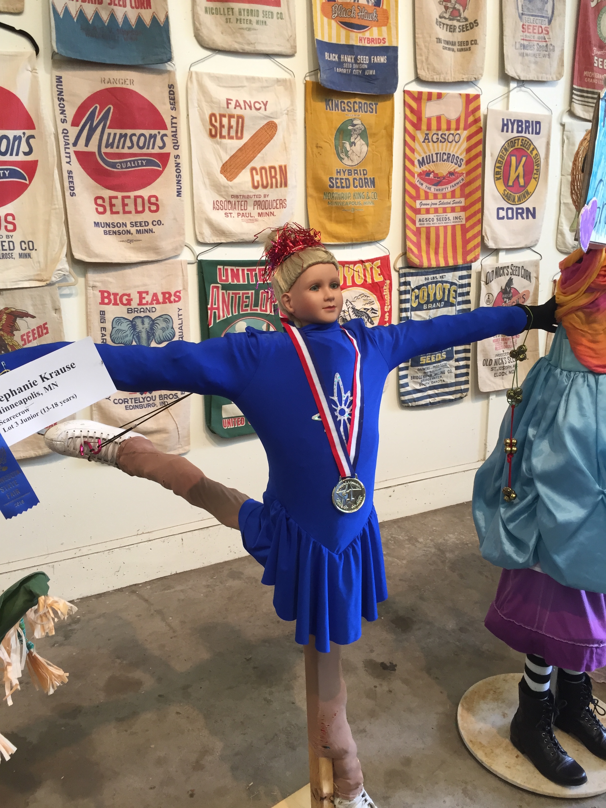
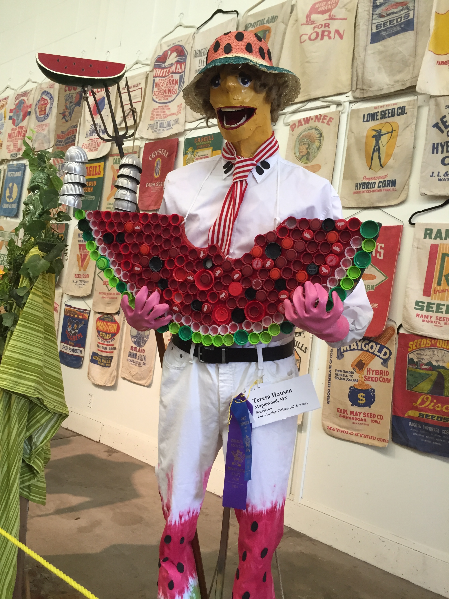
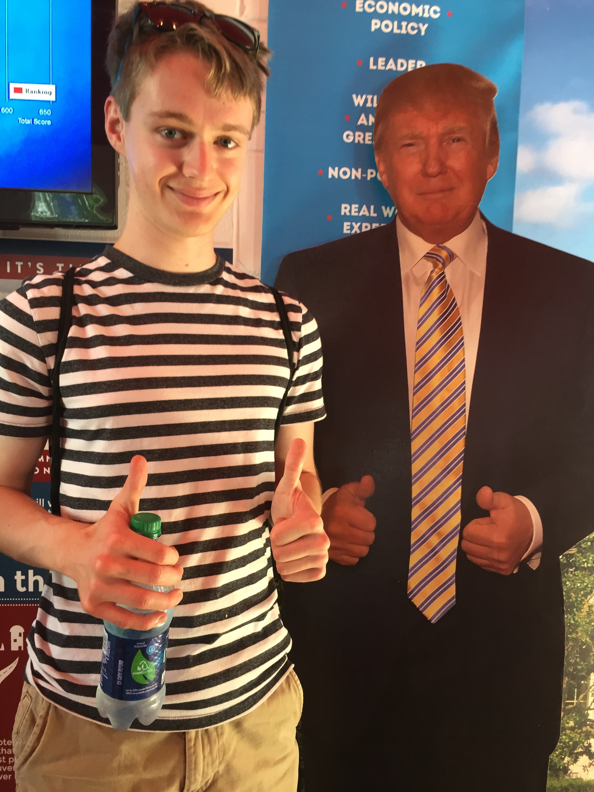

I went to the state fair with Brian, his mom, and his brother today. The weather was nice, and we left very early in the morning — I had to wake up at 9:30 am. Only thing is I accidentally went to bed at around 4 am because I was researching indie game culture (I highly respect indie game art critics) and trying to figure out a way to make my laptop an alarm clock, because my phone was downstairs and I was deciding whether or not I should venture into the darkness for my comforting piece of technology, and I was deciding for about four hours, and then it was accidentally 4 am and I realized that I still needed an alarm regardless and had to finagle my way around Apple technology to make it do something I needed it to do. I ended up waking before the alarm at 9 anyway.
Some food highlights: spam sushi, crab fritters, donut bacon sliders (my fave!!), this crazy ass milkshake with donuts and a fuckton of sprinkles (not as good as I thought it would be, apparently it was supposed to be based on breakfast??), and lots of free latte shots. Delicious, cold, sweet lattes. I may or may not be going again with Carlos and Katie, so I didn't get everything I wanted to get, like diet root beer floats and the apple dumpling and a giant pickle. (And to be quite honest, I don't really want to go with them, but I have few other friends and would like to feel alive once in a while.)
I also bought a state fair poster. I liked this year's design a lot – it has a llama on it. My favorite part of the fair was the art exhibit, which I unexpectedly really enjoyed this year; I didn't see any names from MCAD, but some of the art was very cool. Mostly derivative contemporary art trends, but cool nonetheless.
It was funny looking at all the art with Brian's family, though. His mom said that she "didn't get [us] artists." I asked Sean what piece he liked most, and he said "None of them." Brian's favorite painting was of giant rubber duckies, floating on a lake, illuminated only by the moon. It was called "Moonlit Duckies II," which means there's a "Moonlit Duckies I," which means the journey has only begun.
I also enjoyed this year's fucked up scarecrows:
Brian wanted to visit the republican booth, so we did. We didn't manage to get a picture of the Hillary Clinton cutout dressed in prototypical jail clothes, but I did manage to get this photo:
I just realized he totally looks like a stand-in for Clinton!
After the fair we went back to Brian's and watched "Monty Python's The Holy Grail" with his family. His brother had never seen it before, which is INSANE, because I first saw it very early, in middle school I think, and I always believed that Monty Python, The Office, and Napoleon Dynamite were cultural touchstones of the Reinken household. Apparently not.
The "oral sex" scene was very awkward to watch. His brother is only 15 years old. But, more uncomfortably, his parents were there, not laughing, and I was hysterically giggling to myself because I do not act appropriately in uncomfortable situations, like silence.
It's hard to believe that Brian is moving soon. I don't feel too sad, but that's likely only because it doesn't quite feel real yet. Then again, I know that I will see him very soon, in Novemeber at Thanksgiving. And then, I will move across the country to live with him in poverty. Brian seems to be in distress already. In comparison to times past, I feel much more numb; I'm not moved by great emotion anymore, and there's no great purpose propelling me forward. I am content to exist and bide my time with food and movies until...death, I guess. Is this what it's like to be slowly sapped of youthful vigor? Is the trasition from young adult to middle-aged adult a ubiquitous experience, and is there no turning back? When will I stop feeling bored and start feeling excited to be alive?
Oh, I know. I feel most alive when I watch films! Oh god, it's happening. But it's not all bad. After Monty Python we went back to my house (Brian had wanted to stay at his for his mom, whom Brian thinks is very, very sad about his inevitable departure) and finished "Fiddler on the Roof," which we started yesterday, along with "Birdemic." What a lovely film. Brian seems very interested in making media with me, like podcasts (well, I guess that's his own thing) and Twines and short films. I hope we can maintain this level of mutual interest and energy. The relentless creative energy that we had as a pair our senior year of high school is a specter that haunts our partnership – will we ever be able to capture that magic again? I think so. I am hopeful.
I am afraid for school to start, and I do not want to do my senior project. I do not feel anything. I eat, sleep, and keep my eyes busy. I watch a lot of YouTube. I work on this website, toiling away at something no one will ever see. I, alone, face self-ordained obstacles. I don't know if I used "ordained" correctly.